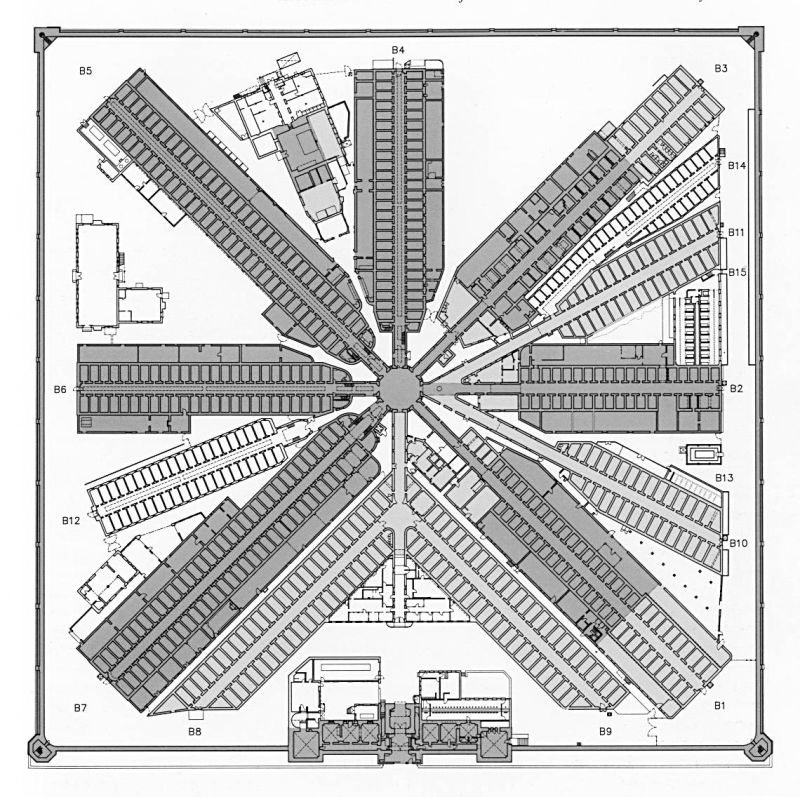
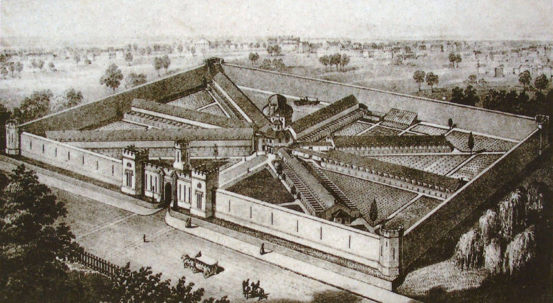

Dog was admitted
Prisoner
Prisoners
Gargoyle outside the prison
Prison map
Illustration of the prison
Police outside the prison
Prisoner
 Prisoner
PrisonerHallways inside
Emblem on a gate
Bird's eye view of prison
PrisonerNumber of Prisoners Admitted Based on Religious Identity
As seen in this graph, the vast majority of prisoners (498 out of 520 or ~96%) were not religious. This result likely solidified the prison supporters’ belief that religious education could help reduce criminal behavior, thereby promoting it in the reform process. However, the data itself actually lacks context and could alternatively suggest that most people were not religious at the time, and the following distribution in the prison simply reflects that. Regardless of the validity of either statements, this demographic distribution provides an environment in testing this new idea of “penitence”, in which religious education would bring about reform.
The number of people who can read has increased by 18.2%, emphasizing the system’s attempts at teaching prisoners in reading and writing. As bibles were available for prisoners to read, the effects of improving these skills were twofold--being literate would aid prisoners in becoming less “ignorant” (a term used frequently in the data set) and being able to read would make religious education more accessible.
The frequency of negative comments (“no” and “not”) that signify disapproval is higher than positive comments (“religious” and “religion”) that signify religious reform in the comments of all prisoners. Among all comments, the occurrence of positive evaluation for LP is 0.014 and ILP is 0.014. The occurrence of negative evaluation for LP is 0.022 and ILP is 0.028. In sum, the occurrence of negative comments is about 10 times higher than of positive comments that both groups (LP and ILP) received.
The frequency in making subjective comments such as “ignorant” on both LP and ILP are similar. The frequency of the word “ignorant” occurred in the comments on LP is 0.005 and ILP is 0.006. Thus, we assume that there is no significant change in the subjectivity level of the evaluation for both groups.
The frequency of using negative responses such as “no” “not” “ignorant” is higher than the positive words such as “religion” and “religious” in comparison. Still, without knowing the content of each description, we can’t determine if convicts were open to receive religious education during the reform.